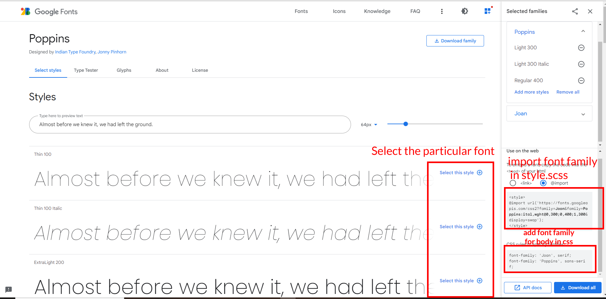
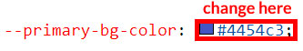
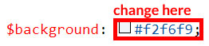
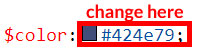
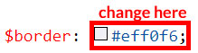
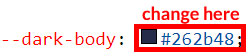
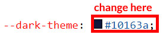
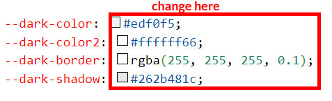

FAQ'S
General Style
How to Change Font Style ?
Step 1:
Go To style.scss (assets/scss/style.scss )
if you want to change another font-family Go to the site Google Fonts And Select One font Family and import In to style.css file
How to Select font Family
Example:

Step 2:
And paste Your Selected font-family in Style.scss i.e (root:-assets/scss/style.scss)
Example:
@import url("https://fonts.googleapis.com/css?family=Roboto:300,400,500,700,900");
Step 3:
And add the Your Selected font-family in _custom.scss(assets/scss/custom/_custom.scss)
Example:
body {
margin: 0;
font-family: 'Roboto', sans-serif;
font-size: 14px;
font-weight: 400;
line-height: 1.5;
color: $color;
text-align: left;
background: #f2f6f9;
}
How to Change Logo ?
Go To "assets/images/brand" folder and replace your logo with Previous Logos within in image size. note: Please don't increase logo sizes. Replace your logo within given image size. otherwise the logo will not fit in particular place it disturbs the template design.
RTL Version & LTR Version
How to Enable RTL version?
open switcher-styles.js
path:(HTML/Dashtic/assets/js/switcher-styles.js)file .
and remove
comments for $('body').addClass('rtl') to enable RTL
version as shown in below
/***************** RTL *********************/
// $('body').addClass('rtl');
/***************** RTL *********************/
$('body').addClass('rtl') as shown below
/***************** RTL *********************/
$('body').addClass('rtl');
/***************** RTL *********************/
How to Enable LTR version?
open switcher-styles.js
path:(HTML/Dashtic/assets/js/switcher-styles.js)file .
and remove
comments for $('body').addClass('ltr') to enable LTR
version as shown in below
/***************** LTR *********************/
// $('body').addClass('ltr');
/***************** LTR *********************/
$('body').addClass('ltr') as shown below
/***************** LTR *********************/
$('body').addClass('ltr');
/***************** LTR *********************/
Light Theme & Dark Theme
How to Enable Darktheme?
open switcher-styles.js
path:(HTML/Dashtic/assets/js/switcher-styles.js)
file and remove comments for dark-theme to enable
dark-theme style as shown in below
/***************** DARK THEME *********************/
// $('body').addClass('dark-theme');
/***************** Dark THEME *********************/
dark-mode as
shown below
/***************** DARK THEME *********************/
$('body').addClass('dark-theme');
/***************** Dark THEME *********************/
How to Enable Light theme?
open switcher-styles.js
path:(HTML/Dashtic/assets/js/switcher-styles.js)
file and remove comments for light-theme to enable
light-theme style as shown in below
/***************** Light THEME *********************/
// $('body').addClass('light-theme');
/***************** Light THEME *********************/
light-theme as
shown below
/***************** Light THEME *********************/
$('body').addClass('light-theme');
/***************** Light THEME *********************/
Header Styles
How to Enable Color-header?
open switcher-styles.js
path:(HTML/Dashtic/assets/js/switcher-styles.js)
file and remove comments for color-header to enable
color-header style as shown in below
/**Color-Header**/
// $('body').addClass('color-header');
/**Color-Header**/
color-header
as shown below
/**Color-Header**/
$('body').addClass('color-header');
/**Color-Header**/
How to Enable Dark-header?
open switcher-styles.js
path:(HTML/Dashtic/assets/js/switcher-styles.js)
file and remove comments for dark-header to enable
dark-header style as shown in below
/**Dark-Header**/
// $('body').addClass('dark-header');
/**Dark-Header**/
dark-header as
shown below
/**Dark-Header**/
$('body').addClass('dark-header');
/**Dark-Header**/
How to Enable Light-header?
open switcher-styles.js
path:(HTML/Dashtic/assets/js/switcher-styles.js)
file and remove comments for light-header to enable
light-header style as shown in below
/**Light-Header**/
// $('body').addClass('light-header');
/**Light-Header**/
light-header
as shown below
/**Light-Header**/
$('body').addClass('light-header');
/**Light-Header**/
Menu Styles
How to Enable Light Menu?
open switcher-styles.js
path:(HTML/Dashtic/assets/js/switcher-styles.js)
file and remove comments for light-menu to enable
light-menu style as shown in below
/**Light-menu**/
// $('body').addClass('light-menu');
/**Light-menu**/
light-menu as
shown below
/**Light-menu**/
$('body').addClass('light-menu');
/**Light-menu**/
How to Enable Color Menu?
open switcher-styles.js
path:(HTML/Dashtic/assets/js/switcher-styles.js)
file and remove comments for color-menu to enable
color-menu style as shown in below
/**Color-menu**/
// $('body').addClass('color-menu');
/**Color-menu**/
color-menu as
shown below
/**Color-menu**/
$('body').addClass('color-menu');
/**Color-menu**/
How to Enable Dark Menu?
open switcher-styles.js
path:(HTML/Dashtic/assets/js/switcher-styles.js)file and
remove
comments for dark-menu to enable dark-menu style as shown
in below
/**Dark-menu**/
// $('body').addClass('dark-menu');
/**Dark-menu**/
dark-menu as
shown below
/**Dark-menu**/
// $('body').addClass('dark-menu');
/**Dark-menu**/
Switcher Styles
How to Enable Boxed-Layout?
open switcher-styles.js
path:(HTML/Dashtic/assets/js/switcher-styles.js)file and
remove
comments for layout-boxed to enable layout-boxed style as
shown in below
//Boxed Layout Style
if (!localStorage.getItem('dashticfullwidth') && !localStorage.getItem('dashticboxedwidth')) {
// $('body').addClass('layout-boxed');
}
layout-boxed
as shown below
//Boxed Layout Style
if (!localStorage.getItem('dashticfullwidth') && !localStorage.getItem('dashticboxedwidth')) {
$('body').addClass('layout-boxed');
}
How to Enable Scrollable-Layout?
open switcher-styles.js
path:(HTML/Dashtic/assets/js/switcher-styles.js)
file and remove comments for scrollable-layout to enable
scrollable-layout style as shown in below
//Scrollable-Layout Style
if (!localStorage.getItem('dashticfixed') && !localStorage.getItem('dashticscrollable')) {
// $('body').addClass('scrollable-layout');
}
scrollable-layout as shown below
//Scrollable-Layout Style
if (!localStorage.getItem('dashticfixed') && !localStorage.getItem('dashticscrollable')) {
$('body').addClass('scrollable-layout');
}
How to Enable Body Style?
open switcher-styles.js
path:(HTML/Dashtic/assets/js/switcher-styles.js)
file and remove comments for body-style1 to enable
body-style style as shown in below
//Body Style
if (!localStorage.getItem('dashticdefaultbody') && !localStorage.getItem('dashticbodystyle')) {
// $('body').addClass('body-style1');
}
body-style1 as
shown below
//Body Style
if (!localStorage.getItem('dashticdefaultbody') && !localStorage.getItem('dashticbodystyle')) {
$('body').addClass('body-style1');
}
Vertical Menu Styles
How to Enable Sidemenu-Icon-with Text?
open switcher-styles.js
path:(HTML/Dashtic/assets/js/switcher-styles.js)
file and remove comments for icontext-menu to enable
icontext-menu style as shown in below
/**Icon-Text-Menu**/
// $('body').addClass('icontext-menu');
/**Icon-Text-Menu**/
icontext-menu as shown below
/**Icon-Text-Menu**/
$('body').addClass('icontext-menu');
/**Icon-Text-Menu**/
How to Enable Closed-Menu?
open switcher-styles.js
path:(HTML/Dashtic/assets/js/switcher-styles.js)
file and remove comments for closed-menu to enable
closed menu style as shown in below
/**closed-Menu**/
// $('body').addClass('closed-menu');
/**closed-Menu**/
closed-menu as shown below
/**closed-Menu**/
$('body').addClass('closed-menu');
/**closed-Menu**/
How to Enable Icon Overlay
open switcher-styles.js
path:(HTML/Dashtic/assets/js/switcher-styles.js)
file and remove comments for sideicon-menu to
enable Icon Overlay style as shown in below
/**Icon-Overlay-Menu**/
// $('body').addClass('sideicon-menu');
/**Icon-Overlay-Menu**/
sideicon-menu
as shown below
/**Icon-Overlay-Menu**/
$('body').addClass('sideicon-menu');
/**Icon-Overlay-Menu**/
How to Enable Hover Submenu
open switcher-styles.js
path:(HTML/Dashtic/assets/js/switcher-styles.js)
file and remove comments for Hover Submenu to enable Hover
submenu style as shown in below
/**Hover-Sub-Menu**/
// $('body').addClass('hover-submenu');
/**Hover-Sub-Menu**/
Hover Submenu
as shown below
/**Hover-Sub-Menu**/
$('body').addClass('hover-submenu');
/**Hover-Sub-Menu**/
How to Enable Hover Submenu style1
open switcher-styles.js
path:(HTML/Dashtic/assets/js/switcher-styles.js)
file and remove comments for Hover Submenu Style1 to enable
Hover submenu style1 style as shown in below
/**Hover-Sub-Menu1**/
// $('body').addClass('hover-submenu1');
/**Hover-Sub-Menu1**/
Hover Submenu Style1 as shown below
/**Hover-Sub-Menu1**/
$('body').addClass('hover-submenu1');
/**Hover-Sub-Menu1**/
Horizontal Click & Horizontal Hover styles
How to Enable Horizontal layout
open switcher-styles.js
path:(HTML/Dashtic/assets/js/switcher-styles.js)
file and remove comments for Horizontal layout to enable
Horizontal layout style as shown in below
/***************** Horizontal THEME *********************/
// $('body').addClass('horizontal');
/***************** Horizontal THEME *********************/
Horizontal layout as shown below
/***************** Horizontal THEME *********************/
$('body').addClass('horizontal');
/***************** Horizontal THEME *********************/
How to Enable Horizontal Hover layout
open switcher-styles.js
path:(HTML/Dashtic/assets/js/switcher-styles.js)
file and remove comments for Horizontal Hover layout to
enable Horizontal Hover layout style as shown in below
/***************** Horizontal-Hover THEME *********************/
// $('body').addClass('horizontal-hover');
/***************** Horizontal-Hover THEME *********************/
Horizontal Hover layout as shown below
/***************** Horizontal-Hover THEME *********************/
$('body').addClass('horizontal-hover');
/***************** Horizontal-Hover THEME *********************/
Theme Styles
Primary Color
How to Change Primary Color?
Please follow the bellow steps to change Primary Color
Step 1 :
To change Primary Color you have to open _custom.scss file and replace what color you want as shown in below
Rootpath : _custom.scss (assets/scss/custom/_custom.scss )
Note : After Changing color you must run gulp command's . Refer gulp page for more gulp commands click here.
Light Theme Style
How to Change Light Background Color?
Please follow the bellow steps to change Light Background Color
Step 1 :
To change Light Background Color you have to open _variables.scss file and replace what color you want as shown in below
Rootpath : _variables.scss (assets/scss/_variables.scss )
Note : After Changing color you must run gulp command's . Refer gulp page for more gulp commands click here.
How to Change Light Text Color?
Please follow the bellow steps to change Light Text Color
Step 1 :
To change Light Text Color you have to open _variables.scss file and replace what color you want as shown in below
Rootpath : _variables.scss (assets/scss/_variables.scss )
Note : After Changing color you must run gulp command's . Refer gulp page for more gulp commands click here.
How to Change Light Border Color?
Please follow the below steps to change Light Border Color
Step 1 :
To change Light Border Color you have to open _variables.scss file and replace what color you want as shown in below
Rootpath : _variables.scss (assets/scss/_variables.scss )
Note : After Changing color you must run gulp command's . Refer gulp page for more gulp commands click here.
Dark Theme Style
How to Change Dark body Color?
Please follow the bellow steps to change Dark body Color
Step 1 :
To change Dark body Color you have to open _custom.scss file and replace what color you want as shown in below
Rootpath : _custom.scss (assets/scss/custom/_custom.scss )
Note : After Changing color you must run gulp command's . Refer gulp page for more gulp commands click here.
How to Change Dark Theme Color?
Please follow the bellow steps to change Dark Theme Color
Step 1 :
To change Dark Theme Color you have to open _custom.scss file and replace what color you want as shown in below
Rootpath : _custom.scss (assets/scss/custom/_custom.scss )
Note : After Changing color you must run gulp command's . Refer gulp page for more gulp commands click here.
How to Change Dark default Color ,border color ,and shadow color?
Please follow the below steps to change Dark default Color ,border color ,and shadow color
Step 1 :
To change Dark default Color ,border color ,and shadow color you have to open _custom.scss file in scss folder and replace what color you want as shown in below
Rootpath : _custom.scss (assets/scss/custom/_custom.scss )
Note : After Changing color you must run gulp command's . Refer gulp page for more gulp commands click here.